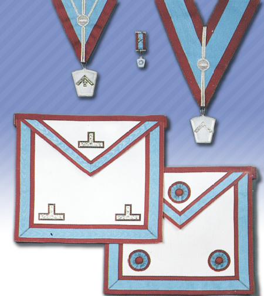
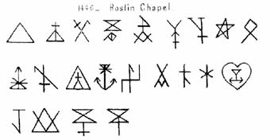
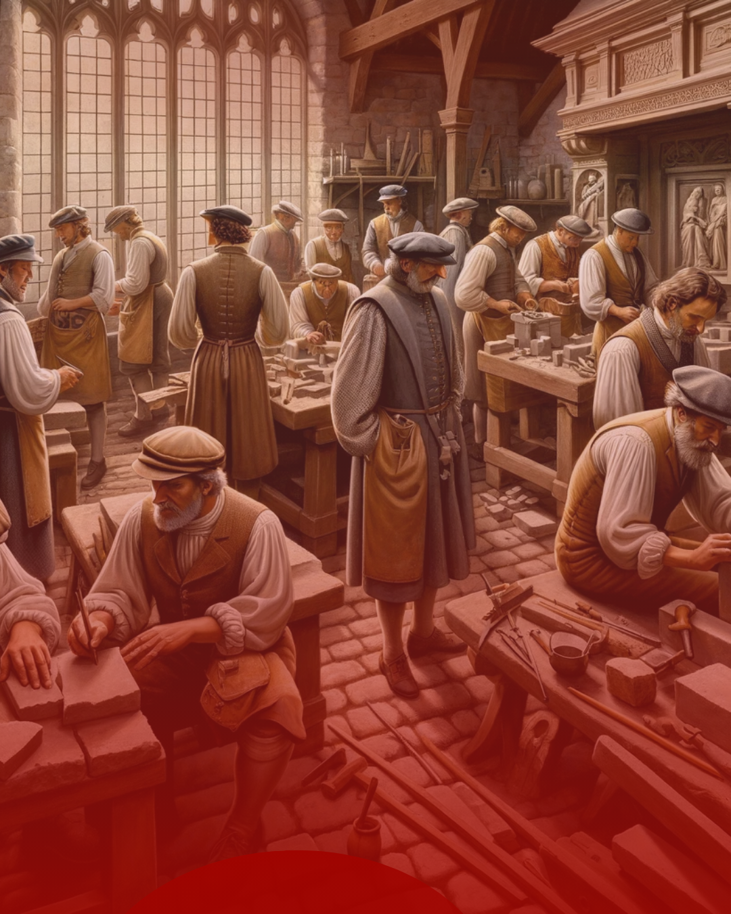
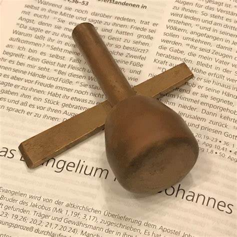
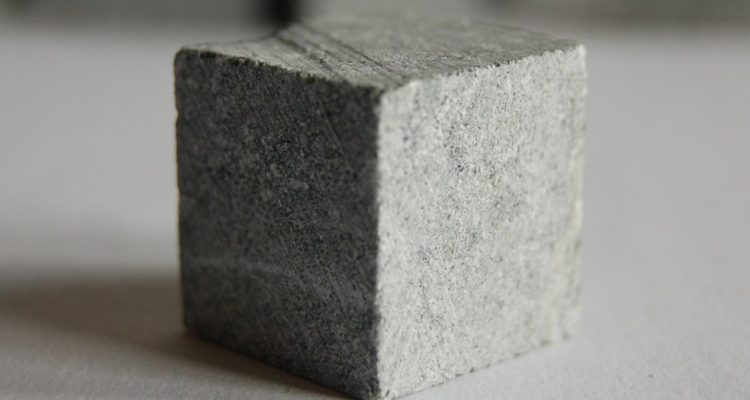

Mestres Maçons da Marca
Grande Loja de Mestres Maçons da Marca do Rio de Janeiro
Quem
Somos
A Grande Loja de Mestres da Marca do Estado do Rio de Janeiro é uma potência maçônica independente, dedicada a preservar e transmitir os ensinamentos e simbolismos desse importante grau da Maçonaria.
Fundada com o compromisso de manter os antigos landmarks e tradições, nossa Grande Loja reúne Lojas de Marca em todo o Estado do Rio de Janeiro, promovendo o aperfeiçoamento do Mestre Maçom através dos princípios e ensinamentos do Grau da Marca.
Nossa
Missão
Preservar os antigos landmarks, promover o aperfeiçoamento do Mestre Maçom e a prática dos princípios da Marca, intensificando os laços de fraternidade e solidariedade entre todos os Irmãos.

Simbologia
da
Marca
A Marca Maçônica representa o símbolo pessoal do artesão, a assinatura da sua obra e a evidência do seu trabalho. No Grau da Marca, cada Mestre escolhe sua marca pessoal, simbolizando sua jornada única e contribuição para o edifício espiritual da humanidade.
O que é
o Grau
da Marca?

O Grau da Marca é um dos mais antigos e significativos da Maçonaria, complementando os ensinamentos dos três graus da Loja Simbólica. Ele aprofunda o conhecimento do Mestre Maçom por meio de um simbolismo rico, centrado na construção do Templo de Salomão.
Neste grau, o Mestre Maçom compreende a importância da marca pessoal — símbolo de sua identidade única e contribuição para a grande obra maçônica. A pedra angular e a pedra cúbica com marca representam o aperfeiçoamento individual e a integração do maçom na construção coletiva.
Ao ingressar no Grau da Marca, o Mestre Maçom é convidado a aprofundar seu compromisso com a Arte Real, explorando simbolismos que transcendem os ensinamentos anteriores. Este grau oferece uma oportunidade única de crescimento pessoal e espiritual, reforçando os laços fraternais e a dedicação à construção de um legado duradouro.
A jornada no Grau da Marca é um chamado à excelência, desafiando o Maçom a deixar sua marca indelével na história da Ordem. É uma experiência enriquecedora que fortalece a identidade maçônica e inspira a contínua busca pela verdade, sabedoria e perfeição.

O Grau de Mestre Maçom da Marca atua como uma verdadeira escola de liderança, enfatizando responsabilidade e compromisso. Em cada sessão, o Irmão é lembrado das tarefas que lhe são atribuídas e da responsabilidade que assume . Ocupando cargos como Venerável Mestre, Vigilante ou Supervisor, desenvolve-se sua capacidade de liderar.

Visando o aperfeiçoamento interior, o Grau de Mestre Maçom da Marca aprofunda o estudo das alegorias e símbolos maçônicos. Por exemplo, o Cinzel simboliza o esforço que revela conhecimentos e elimina a ignorância , enquanto o Nível ensina a igualdade entre os homens. Esse aprendizado simbólico inspira o aperfeiçoamento moral e a jornada interior do Irmão.
Um pouco
da Nossa História
A história do Grau da Marca remonta aos primórdios da Maçonaria operativa, quando os pedreiros realmente utilizavam suas marcas pessoais para identificar seu trabalho nas construções. Ao longo dos séculos, este importante elemento da tradição maçônica desenvolveu-se e preservou conhecimentos essenciais.
1738: Origem na Inglaterra
Primeiros registros do Grau da Marca na Grande Loja de Inglaterra.
1856: Grande Loja da Marca na Inglaterra
Fundação da Grande Loja de Mestres da Marca da Inglaterra.
1930: Introdução no Brasil
Primeiros trabalhos do Grau da Marca em território brasileiro.
1985: Consolidação no Rio de Janeiro
Expansão e consolidação das Lojas de Marca no Estado do Rio de Janeiro.
2001: Fundação da Grande Loja
Fundação da Grande Loja de Mestres da Marca do Estado do Rio de Janeiro.
GLMMRJ
Como Participar?
Para ser admitido na Ordem dos Mestres da Marca, o candidato deve:
Ser um Mestre Maçom regular
Pertencer a uma Loja Simbólica reconhecida pela CMSB, GOB ou COMAB
Ser indicado e sucundado por um membros ativos do Grau
Aceitar os princípios e regulamentos da Grande Loja de Mestres da Marca
Os Irmãos interessados em conhecer mais sobre o Grau da Marca ou em se filiar a uma Loja de Marca em sua região podem entrar em contato através dos canais abaixo.
Nossas
Autoridades
"O trabalho dedicado de cada Grão Mestre fortalece nossa tradição e ilumina nosso caminho futuro."